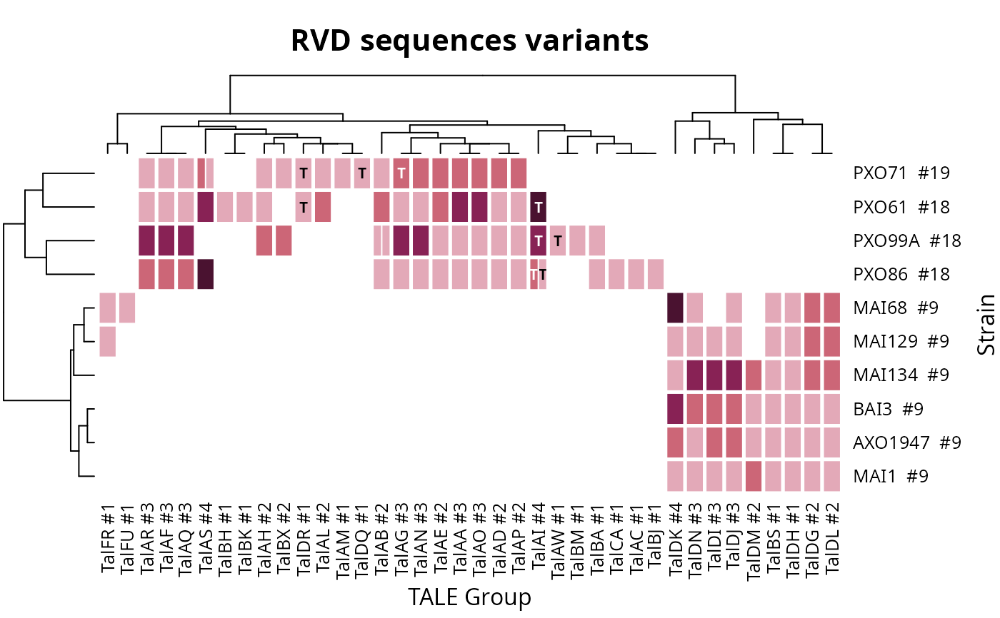

Curated TALE annotations for ten published Xanthomonas oryzae genomes
Source:R/data.R
tale_annotations.RdThe TALEs of ten complete, published genomes, named as the literature
names them and annotated by hand. It is the reference this package's own
discovery can be checked against: three of the ten genomes, MAI1, BAI3
and PXO86, are the ones tantale_genome() installs, so a
tell_tales() run on them can be compared array by array with what is
recorded here.
Format
A tibble with 128 rows and 10 columns. One row is one TALE gene.
- strain
The strain, e.g.
"PXO99A". Ten of them.- label, tal_name
The TALE's name in the literature, capitalised (
"Tal4a") and as written in the source publication ("tal4a").strainandlabeltogether identify a row: a label repeats across strains, never within one.tal_nameis missing where the source gives no name.- annotale_class
The AnnoTALE class the TALE belongs to (
"TalAH"), from the catalogue of 2026-10-04. A class groups TALEs similar enough to be considered the same TALE across strains, and is how the literature refers to them. Missing for two rows, see Details.- replicon_id, genome_id
The RefSeq replicon and the GenBank assembly the TALE comes from, e.g.
"NC_010717"and"GCA_000019585.2". Present for every row: this is what lets a reader fetch the sequence.- pubmed
PubMed identifier(s) of the publication(s) reporting the genome or the TALE, comma-separated where there is more than one.
- truncTALE
TRUEfor the nine truncTALEs, TALEs whose C-terminal region is naturally shortened so that they no longer activate transcription. See the truncTALE article for what this does to discovery and to frameshift correction.- rvd_seq
The repeat-variable diresidues in array order, dash-separated (
"NI-HD-NG-..."), the format oftales_rvd_strings.tales_predict_targetstakes them as a namedBStringSet:Biostrings::BStringSet(setNames(rvd_seq, paste(strain, label))). A lowercase RVD ("ng","n*") marks a repeat of non-standard length, the usual convention; 16 of the 128 arrays carry at least one, so do not upper-case this column before comparing it with anything.- unusual_feature
A note, for the nine arrays that carry one, on what makes the gene atypical: repeats of non-standard length, deletions, duplications, a premature stop.
Source
Compiled by Bao Tram Vi during the work that became this package, from
the genome records and publications cited in each row; published here for
the first time. annotale_class was taken from AnnoTALE's class
catalogue as downloaded on 2026-10-04. The genome sequences themselves are the GenBank
assemblies named in genome_id, at
https://www.ncbi.nlm.nih.gov/datasets/genome/.
Details
The table is sparse where the sources are: tal_name is absent for
19 rows and pubmed for 19. The gaps are the state of the
curation, not placeholders to be filled by a guess.
annotale_class is missing for one row: PXO99A's Tal7b,
the five-repeat allele its own unusual_feature describes, too
short to be catalogued.
The class is stored without the member index AnnoTALE appends to it
("TalAH", not "TalAH30"). That index numbers the members
of a class as of the day it is read, and the catalogue grows: every one
of the 73 indices recorded when this table was curated in 2021 had moved
by 2026, while the class itself agreed in every case.
Identifiers that name an array within a single run are deliberately not
included: the tell_tales array id and AnnoTALE's
tempTALE name both depend on the run that produced them, so
neither would survive a rerun. Matching a row to a fresh
tell_tales result means matching on what the TALE is,
its rvd_seq, rather than on what some run called it.
No column of DisTAL groups is included. The working file carried one, but
how its values had been computed was not recorded, so they could not be
vouched for. tales_compare_distal followed by
tales_group_hclust computes such groups from
rvd_seq.
See also
talomes_heatmap, which takes a table of this
shape directly: the column names below are the ones its
group_col, strain_col, rvd_col and
trunc_tales_col arguments expect.
Other TALE discovery:
correct_tales(),
tales_from_annotale(),
tales_from_telltales(),
tell_tales()
Examples
# the TALEs of one strain
subset(tale_annotations, strain == "PXO86",
select = c("label", "annotale_class", "truncTALE"))
#> # A tibble: 18 × 3
#> label annotale_class truncTALE
#> <chr> <chr> <lgl>
#> 1 AvrXa7 TalAC FALSE
#> 2 PthXo8 TalAP FALSE
#> 3 Tal1 TalAS FALSE
#> 4 Tal2a TalAG FALSE
#> 5 Tal3 TalAI TRUE
#> 6 Tal4a TalCA FALSE
#> 7 Tal4b TalAN FALSE
#> 8 Tal5a TalBA FALSE
#> 9 Tal5b TalAA FALSE
#> 10 Tal5c TalAR FALSE
#> 11 Tal6 TalAI TRUE
#> 12 Tal7a TalAF FALSE
#> 13 Tal7c TalBJ FALSE
#> 14 Tal8b TalAQ FALSE
#> 15 Tal8c TalAO FALSE
#> 16 Tal8d TalAE FALSE
#> 17 Tal8e TalAD FALSE
#> 18 aB4.5 TalAB FALSE
# the ten strains compared class by class; truncTALEs are marked "T"
grouped <- tale_annotations[!is.na(tale_annotations$annotale_class), ]
talomes_heatmap(grouped, group_col = "annotale_class",
strain_col = "strain", rvd_col = "rvd_seq",
trunc_tales_col = "truncTALE")

# the naturally truncated ones, across all ten genomes
table(tale_annotations$strain, tale_annotations$truncTALE)
#>
#> FALSE TRUE
#> AXO1947 9 0
#> BAI3 9 0
#> MAI1 9 0
#> MAI129 9 0
#> MAI134 9 0
#> MAI68 9 0
#> PXO61 16 2
#> PXO71 16 3
#> PXO86 16 2
#> PXO99A 17 2
# what makes the atypical arrays atypical
subset(tale_annotations, !is.na(unusual_feature),
select = c("strain", "label", "unusual_feature"))
#> # A tibble: 9 × 3
#> strain label unusual_feature
#> <chr> <chr> <chr>
#> 1 PXO61 Tal1b Missing 2 first repeats compare to literature
#> 2 PXO86 AvrXa7 repeat 13 is of atypical length (encodes 40 aa)
#> 3 PXO86 Tal3 multiple deletions in the 5′ end, premature stop in the 3′ end …
#> 4 PXO86 Tal4b an 11 codon duplication in the 3′ end
#> 5 PXO86 Tal5a a five-codon deletion in 5′ end
#> 6 PXO86 Tal5b an 11-codon duplication in the 3′ end
#> 7 PXO86 Tal6 multiple deletions in the 5′ end, a 129 bp 3′ end and repeat 4 …
#> 8 PXO86 Tal8b this gene is a nearly identical, functional allele of avrXa23 (…
#> 9 PXO99A Tal7b An allele of tal7b or tal8b of PXO99A with a deletion in the ce…